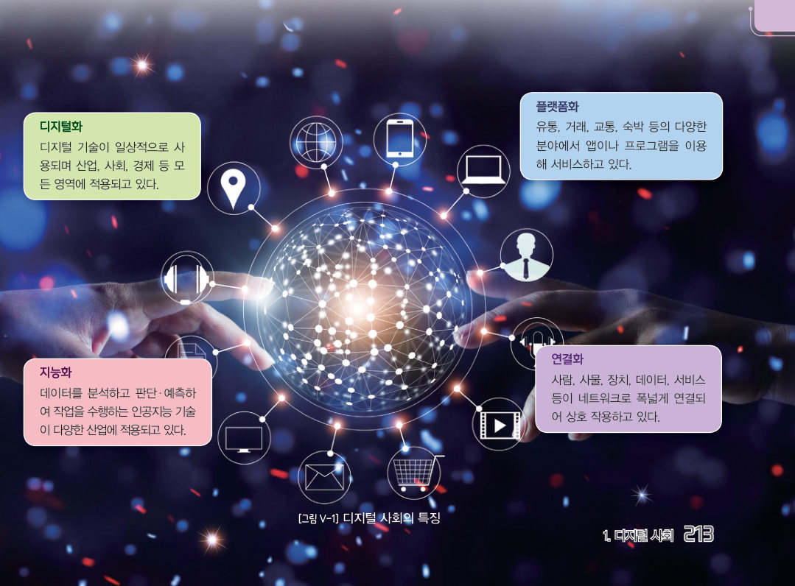
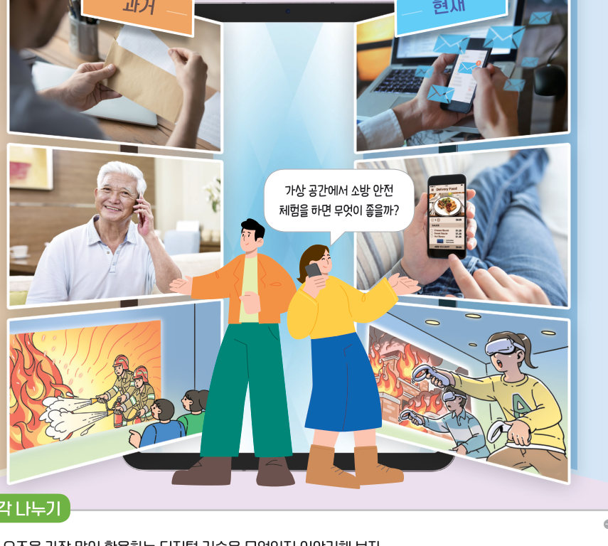
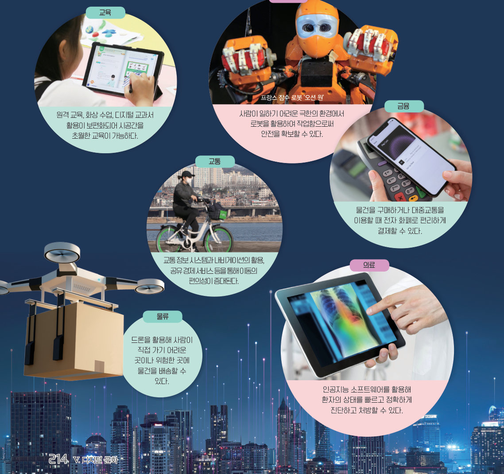
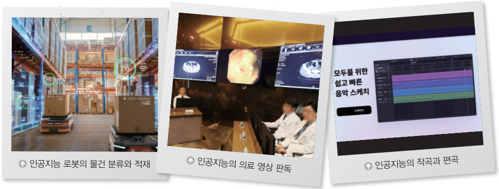

편지 대신 메신저, 종이 지도 대신 내비게이션. 디지털 기술은 우리 삶을 어떻게 바꾸었을까? 과거·현재·미래를 오가며 비교하고, 디지털 사회의 네 가지 특징을 찾아낸 뒤, 나의 하루 속 디지털 기술을 시간표로 그려 보자.

현대인들은 디지털 기술을 이용해 정보와 지식을 빠르게 주고받으며 편리하게 살고 있다. 예전과 비교하여 변화된 삶의 모습을 살펴보고 미래 사회의 모습도 상상해 보자.
디지털 기술은 데이터와 정보를 디지털 형태로 처리·전송·저장하는 기술로 정보, 통신, 의료, 제조업, 금융 등 다양한 분야에서 활용되고 있다. 이러한 디지털 기술이 개인의 생활과 사회의 다양한 분야에 활용되어 많은 영향을 미치는 사회를 디지털 사회라고 한다. 디지털 사회는 디지털화, 플랫폼화, 지능화, 연결화의 특징이 있다.
| 📘 종이 교과서 대신 디지털 교과서로 공부하고, 숙제도 파일로 제출한다. | |
| 🏨 숙박 앱 하나로 여러 숙소의 가격과 후기를 비교하고 예약한다. | |
| 🎬 인공지능이 내 시청 기록을 분석해 다음에 볼 영상을 추천한다. | |
| ⌚ 스마트 워치가 운동 기록을 스마트폰·병원 서버와 주고받는다. | |
| 🛒 중고 거래 앱에서 동네 이웃과 물건을 사고판다. | |
| 🏭 공장 기계의 데이터를 분석해 고장 날 시점을 미리 예측한다. | |
| 🏠 집 밖에서 스마트폰으로 집 안의 에어컨과 조명을 켠다. | |
| 💳 현금 대신 교통 카드와 모바일 결제로 버스 요금을 낸다. |
디지털 사회로의 전환은 개인과 사회에 다양한 변화를 가져오고 있다. 개인은 디지털 기기를 활용함으로써 필요한 자료를 빠르고 편리하게 얻고, 사회 관계망 서비스(SNS)를 통해 가족, 친구와 소통하며 관계를 유지할 수 있다. 또한, 사회적으로는 교육, 산업, 교통, 금융, 의료, 물류 등 다양한 분야에서 변화가 일어나며 편의성과 효율성이 높아지고 있다.

| 원격 교육, 화상 수업, 디지털 교과서 활용이 보편화되어 시공간을 초월한 배움이 가능하다. | |
| 사람이 일하기 어려운 극한의 환경에서 로봇(예: 잠수 로봇 ‘오션 원’)을 활용하여 안전을 확보한다. | |
| 물건을 구매하거나 대중교통을 이용할 때 전자 화폐로 편리하게 결제한다. | |
| 교통 정보 시스템과 내비게이션, 공유 경제 서비스로 이동이 편리해진다. | |
| 드론을 활용해 사람이 가기 어렵거나 위험한 곳에 물건을 배송한다. | |
| 인공지능 소프트웨어로 환자의 상태를 빠르고 정확하게 진단하고 처방한다. |

| 평가 기준 | 스스로 평가 |
|---|---|
| 디지털 사회의 특성을 이해하고 탐구할 수 있는가? | |
| 디지털 사회의 변화가 나의 삶과 진로 결정에 미치는 영향을 분석할 수 있는가? |